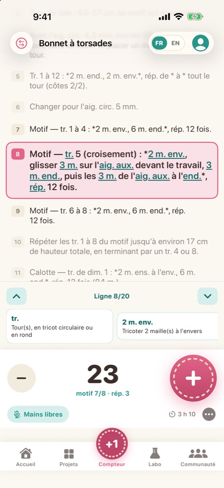
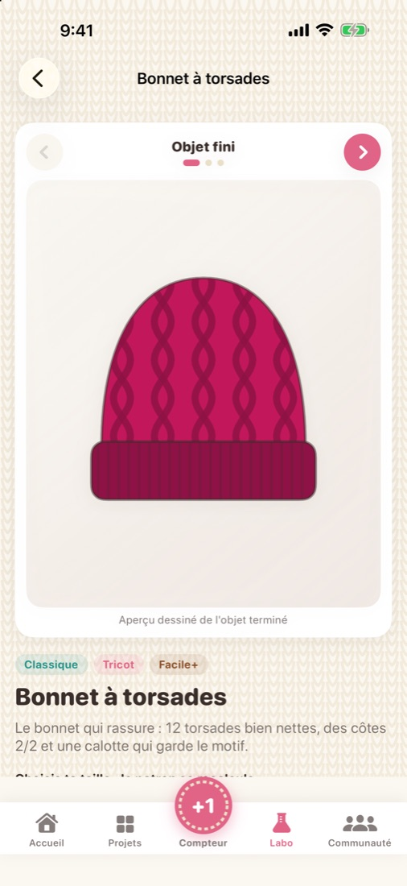
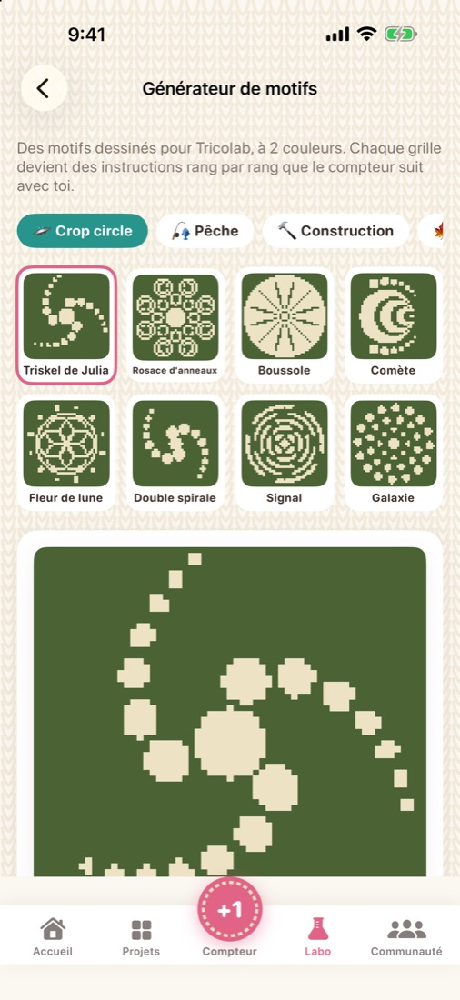
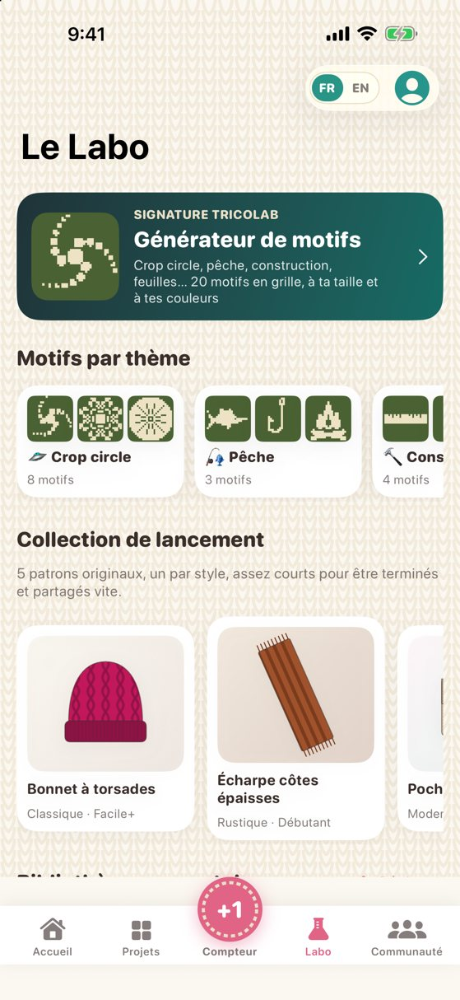
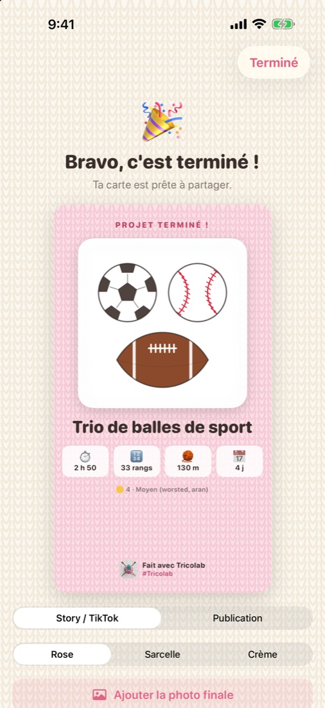
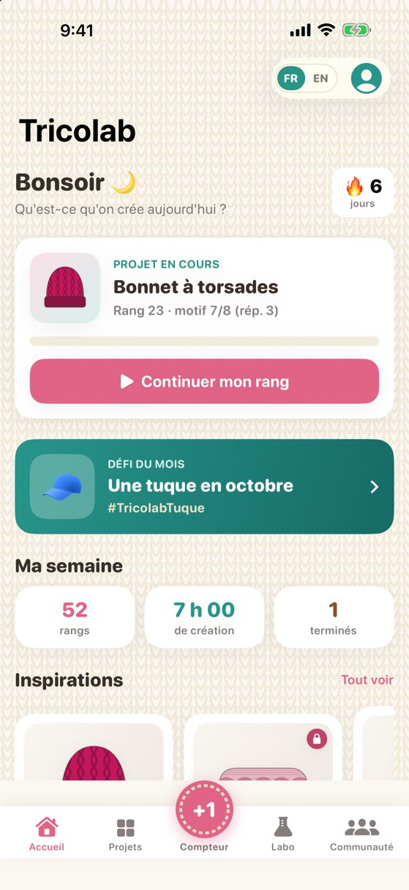

Tricolab
Tout ce que fait Tricolab
Un seul labo pour compter, suivre un patron, créer des motifs et garder tes projets bien rangés.
Un compteur de rangs mains libres
Pensé pour les mains occupées : tu n'as pas à lâcher tes aiguilles.
- Un très gros bouton +, accessible d'un pouce
- Dis « suivant » ou « retour » : le compteur avance tout seul
- L'écran reste allumé pendant que tu travailles
- Motif répété, objectif de rangs, annulation, temps passé

Un patron qui ne perd jamais ta place
Importe un PDF, photographie un patron papier ou colle son texte.
- La ligne en cours est surlignée, ta position est sauvegardée
- Les abréviations sont traduites en clair, en français comme en anglais
- 30 patrons originaux en 5 styles : Classique, Moderne, Rustique, Émoticône et Crop circle
- Dessin de l'objet fini, schéma coté, et tailles qui recalculent les instructions

Un générateur de motifs
20 motifs en grille — crop circle, pêche, construction, feuilles et plus.
- Choisis la taille, deux couleurs et la technique (tricot double face ou crochet tapisserie)
- Les instructions s'écrivent toutes seules, rang par rang
- Le compteur suit ton avancement directement sur la grille

Le Labo
Tout pour apprendre et calculer, sans quitter l'app.
- Techniques pas à pas pour le tricot et le crochet
- Fibres, aiguilles, crochets et accessoires expliqués
- Exemples de schémas et dictionnaire d'abréviations
- Calculateurs : jauge, changement de taille, quantité de laine, tailles d'aiguilles

Partage et motivation
Montre ce que tu as créé, et garde le plaisir de continuer.
- Une carte de fin de projet prête pour tes réseaux
- Un défi par mois avec son mot-clic
- Des badges à débloquer et à partager
- Ton bilan annuel : rangs, heures, laine utilisée, projets terminés

Tes projets, bien rangés
Une fiche par création, sur iPhone comme sur iPad.
- Photos, patron, laine, notes et avancement au même endroit
- Inventaire de laine
- Tout reste sur ton appareil : aucun compte, aucune publicité, aucun traceur

Gratuit ou Tricolab Complet
| Gratuit | Complet | |
|---|---|---|
| Compteur mains libres | ✓ | ✓ |
| Lecteur de patrons (PDF, photo, texte) | ✓ | ✓ |
| Le Labo et ses calculateurs | ✓ | ✓ |
| Défis du mois et cartes à partager | ✓ | ✓ |
| Patrons originaux | 5 | 30 |
| Motifs en grille | 3 | 20 |
« Tricolab Complet » est un achat unique de 4,99 $ CA, sans abonnement.
Prêt à tricoter, crocheter, créer ?
Tricolab est disponible sur l'App Store, pour iPhone et iPad. Gratuite, avec un achat unique facultatif.
Télécharger sur l'App Store